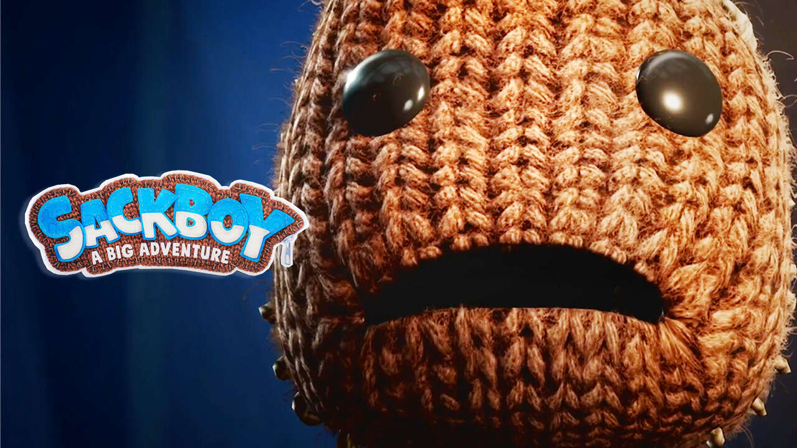

SackBoy


Sackboy: A Big Adventure is a 2020 platform game developed by Sumo
Digital and published by Sony Interactive Entertainment. A spin-off of
the LittleBigPlanet series, it follows Sackboy, and features 3D platforming
as opposed to 2.5D in previous entries. It was released for PlayStation 4
and PlayStation 5 in November 2020 and Windows in October 2022.
Gameplay
sackboy: A Big Adventure is a platform game. Unlike previous
LittleBigPlanet entries with 2.5D platforming, it features a range of
perspectives and 3D movement. Players control Sackboy on world
maps which give access to a multitude of platforming levels and bonus
content. As Sackboy completes each stage new ones unlock allowing
him to progress further. All levels contain collectable objects called
Dreamer Orbs which must be collected en-masse to progress to the
end of the game.
Sackboy’s move set is greatly expanded from previous entries and players
can now slap at will, roll around, nosedive, pick-up objects and flutter
jump, to name a few. Moves can be chained together to create combos that
allow skilled players to travel greater distances. Each level in the game
employs a series of interactable objects that require at least one of Sackboy’s
moves to progress. Sackboy also has access to multiple stages where he can
use new powerups. The Grappling Hook, now called the Clawstring, returns
from LittleBigPlanet 2, allowing Sackboy to grab onto object from afar, the
Whirltool is a boomerang-like device that can be thrown to defeat enemies
and break objects and finally the Plasma Pumps allow Sackboy to hover in
the air and fire energy blasts.
The game is fully playable in both local and online multiplayer allowing up to
4 players to experience the game together. There are stages in each world that
require multiple players to enter and are specifically designed so players must
work together to progress. The game originally did not ship with online
functionality. The feature was added in a patch a month later on 17 December
2020.
The game does not feature any Create Mode akin to LittleBigPlanet entries,
only making certain nods to it through collectables. Players can still customize
their Sackboy via ZomZom’s Shop. ZomZom is a travelling haberdasher that
returns after his appearance in LittleBigPlanet 3. In his shop players can buy
new costumes, try on collected outfits and even paint costume pieces.
Costumes created by the player can be saved and are then available to choose
when a level is entered.